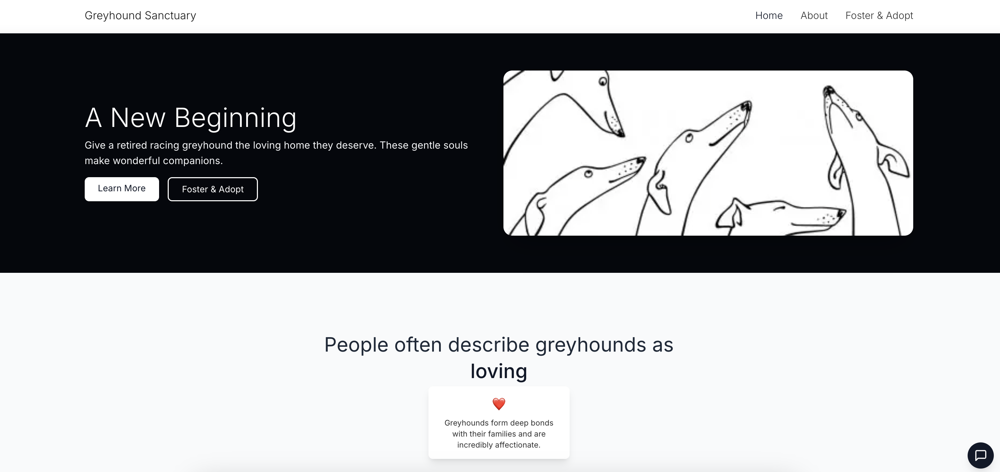
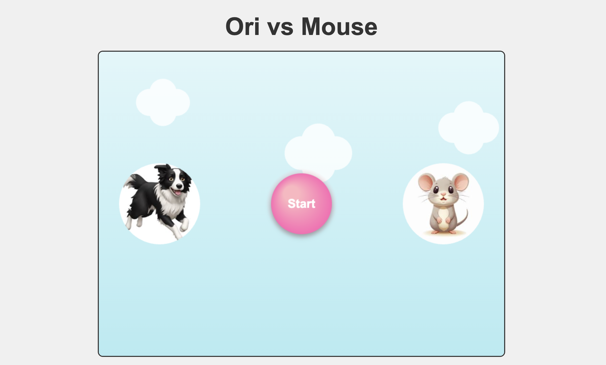
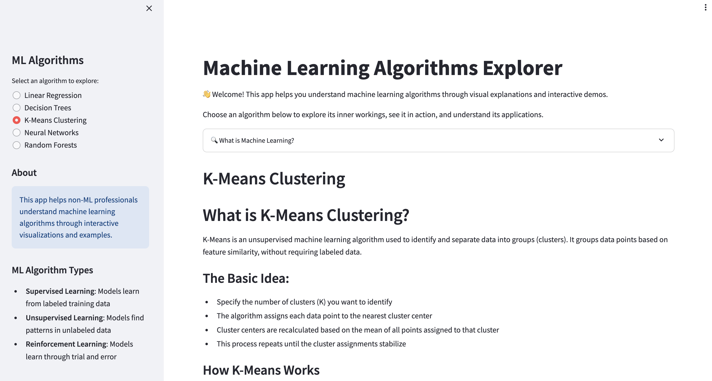

AI Projects
Explore my latest personal projects using generative AI technology✨

Greyhound Webpage
I want to raise public awareness about retired racing greyhounds. This webpage includes educational content about fostering and adoption, as well as an AI chatbot to answer questions about greyhounds.
View Project
Australian Property AI
An LLM-powered platform that analyzes user-input Australian regions and provides comprehensive insights about the property market.
View Project

Ori vs Mouse Game
A fun obstacle-dodging game where you control Ori to avoid obstacles and reach higher levels. Features include poison hazards that reduce HP and special dog Ori that can knock back the mouse to previous levels.
View Project

ML Algorithms Explorer
This app helps you understand machine learning algorithms through visual explanations and interactive demos.
View Project